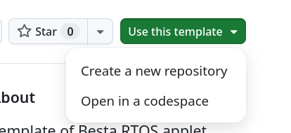
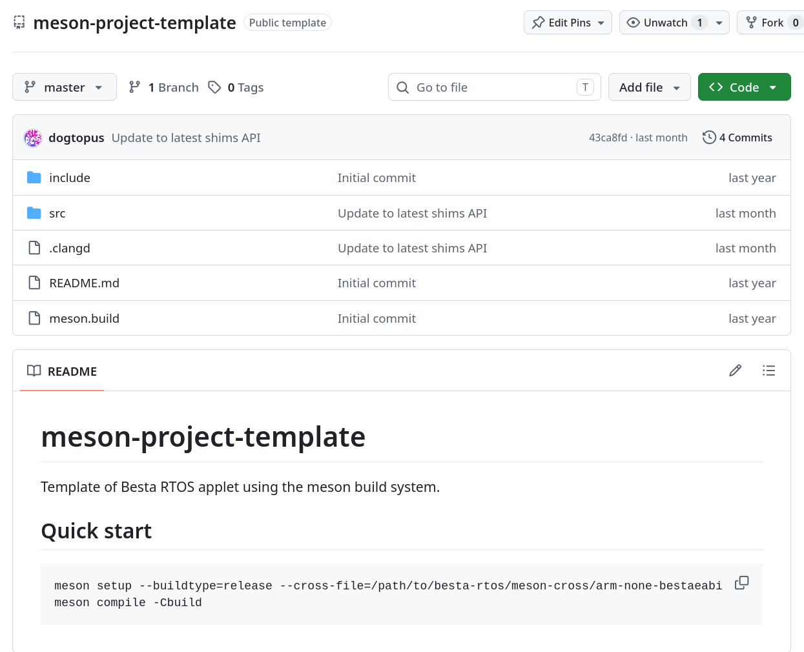

- Generated by
 1.18.0
1.18.0
|
Muteki
EABI code execution on Besta® RTOS devices.
|
Currently Muteki only supports its own GCC flavor, the arm-none-bestaeabi-gcc. It is however also possible to use the Embedded Visual C++ toolchain to develop Besta RTOS homebrew, and we may support it to some extent in the future. Regardless, using Muteki's customized GCC is still recommended over Embedded Visual C++, as the former supports more up-to-date language features like C11/C17, and it is possible to have future updates that add or improve features (e.g. C++ exceptions), that are otherwise difficult or impossible to implement on Embedded Visual C++.
TODO
TODO
Muteki provides first tier support for the Meson build system. Simply use or clone the template repository, as well as clone the cross files repository to get started.

Once you created your own repository, it may look something like this:

The src folder will contains all the source code of your project and any applet metadata, and the include folder will contain any common headers. The meson.build file in the root directory defines how various build tools should be found, and the meson.build under the src folder defines how the applet should be built.
To build the project, simply do it the standard way (plus the cross file):
To change the name and/or version of the applet, one needs to change a few files.
First, open meson.build and change meson-applet-template to a name of your choice. This name is for the Meson project. Similar for Meson project version number.
Then you need to open the src/meson.build file and change any occurrences of Applet to a name of your choice. This changes the target name and the output file name.
Finally, open the src/romspec.toml file, and change all title, short-title to names of your choice. It is also safe to delete entries for languages that you do not wish to support. You can also change the category, copyright or version to your liking. Beware that copyright and version may not show up anywhere on Arm ports of Besta RTOS.
After you made all the changes, rebuild the project.